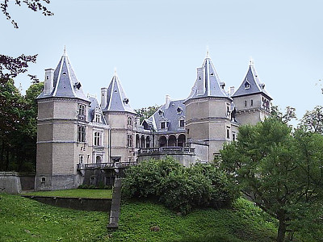

Jest to pierwotnie wczesnorenesansowa murowana budowla o charakterze obronnym, kilkukondygnacyjna, na planie prostokąta, z basztami w każdym z narożników, która została wzniesiona w latach 1550–1560 dla Rafała Leszczyńskiego (starosty radziejowskiego i wojewody brzesko-kujawskiego) w Gołuchowie.
Modernizacji zamku, polegającej na dobudowaniu budynku mieszkalnego w pobliżu oryginalnego dworu i połączeniu ich skrzydłami oraz wykonaniu arkadowej loggi w elewacji wejściowej, dokonano na zlecenie Wacława Leszczyńskiego, wojewody kaliskiego i kanclerza wielkiego koronnego (syna Rafała Leszczyńskiego, który odziedziczył zamek w 1592) w latach 1600-1619. Zamek nabrał wówczas charakteru renesansowo-manierystycznej rezydencji magnackiej.